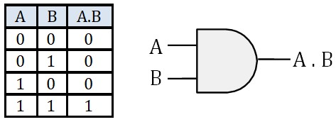
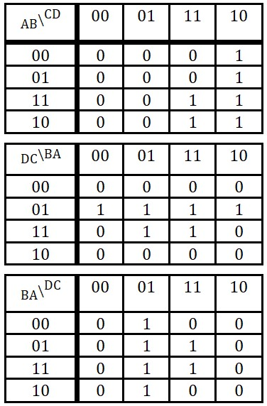
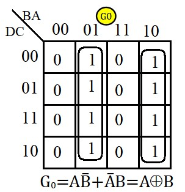
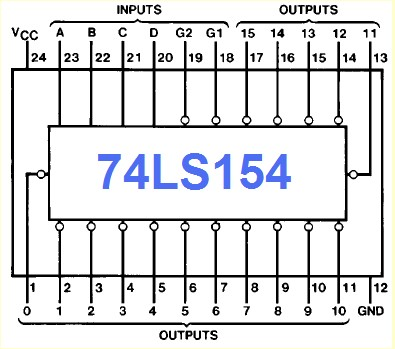
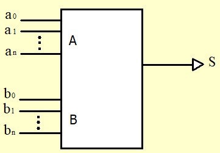
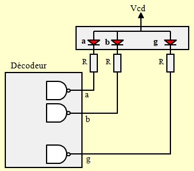
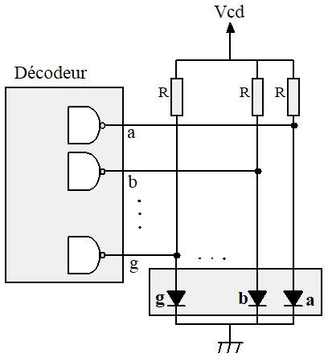
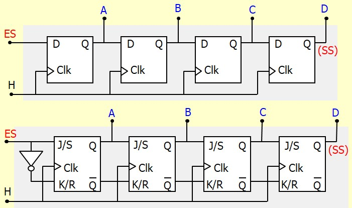
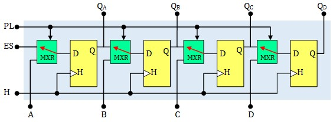
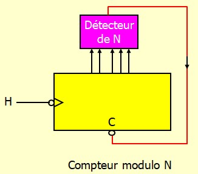

Representation des nombres
Systèmes pondérés
Intérêt du système binaire
Changement de base
Calcul dans le système binaire
La représentation des nombres négatifs
Autres Representations
Le code Gray
Algèbre de Boole
Introduction
Variables Booléenne
Fonctions Booléenne
Opérateurs logiques
Identités remarquables
Théorème de Morgan
Forme Canonique
NAND : Opérateur universel
Simplification des fonctions logiques
Introduction
Diagramme de Karnaugh
Remplissage de la table de Karnaugh
Regrouper les 1 en blocs
Lecture de la table de Karnaugh
Exemple 1: Binaire ⟶ Gray
Exemple 2: Etude d'un convoyeur
Circuits numérique combinatoires
Introduction
Le multiplexeur
Le démultiplexeur
Le décodeur
Décodeur/Démultiplexeur
Comparateur
Additionneur
Introduction
Introduction
Circuit Half adder
Circuit Full adder
Additionneur à propagation de la retenue
Utilisation correcte d'un additionneur
Additionner 4 bits non signés
Additionner 4 bits Signés
Soustracteur
Additionneur/Soustracteur
Additionneur/Soustracteur 4 bits Non signés
Additionneur/Soustracteur 4 bits Signés
Afficheurs 7 segments
Les Circuits séquentiels
Introduction
Les bascules
Le circuit de base
La bascule RS
La bascule RSH
La bascule JK
La bascule JKH
Bascule Réagissant sur front d'horloge
Convention de dessin
La bascule D
Entrées de forçage CLEAR et PRESET
Les Registres
Les Registres à décalage
Introduction
Chargement parallèle
Chargement parallèle Synchrone
Chargement parallèle Asynchrone
Registre à décalage bidirectionnel
Registre à décalage universel
Les compteurs Asynchrones
Introduction
Décompteur Asynchrone
Comptage incomplet
Diviseur de fréquence
Cascadage asynchrone
Compteur BCD
Le compteur 74LS93
Le compteur 74LS90
Compteur BCD modulo 60
Compteur BCD modulo 24
Les compteurs Synchrones

Electronique Numérique
Representation des nombres
La représentation naturelle que nous utilisons pour représenter des nombres est une représentation pondérée. Les systèmes Décimal de base B=10, Octal de base B=8, Hexadécimal de base B=16 et Binaire de base B=2 sont des systèmes pondérés
un système pondéré de base B est caractérisé par :
- Il faut B symboles qu'on appelle chiffres pour représenter un nombre dans une bas B.
Par
exemple :
- Le système Décimal utilise dix chiffres : 0, 1, 2, 3, 4, 5, 6, 7, 8, 9
- Le système Octal utilise 8 chiffres : 0, 1, 2, 3, 4, 5, 6, 7
- Le système Hexadécimal utilise 16 chiffres : 0, 1, 2, 3, 4, 5, 6, 7, 8, 9, A, B, C, D, E, F
- Le système Binaire utilise 2 chiffres : 0, 1
- Chaque chiffre a un "poids" qui dépend de sa position dans le nombre
- Chaque poids est une puissance de B
- A gauche de la virgule (.décimal), on a les puissances positives de B. A droite on a les puissances négatives
- Le poids du chiffre de rang i est B fois celui du rang i-1
- Exemples :
- Le nombre 472 en base 10 peut être décomposé comme suit :
\( 472_{10}= 4 × 10^2 + 7 × 10^1 + 2 × 10^0 \) - Le nombre 345.25 en base 10 peut être décomposé comme suit :
\( 345.25_{10}= 3 × 10^2 + 4 × 10^1 + 5 × 10^0 + 2 × 10^{-1} + 5 × 10^{-2} \) - Le nombre binaire 1011 peut être converti en décimal comme suit :
\( 1101_2 =1×2^3 + 1×2^2 +0×2^1 +1×2^0=1×8+1×4+0×2+1×1=8+4+0+1=13_{10} \) - Le nombre binaire 101.101 peut être converti en décimal comme suit :
\( 101.101_2 =1×4 + 0×2 + 1×1 + 1×0.5 + 0×0.25 + 1×0.125 = 5.625_{10} \) - Le nombre hexadécimal 2F3 peut être converti en décimal comme suit : br \( \rm{2F3_{16}}= 2×16^2 +F×16^1 +3×16^0 = 2×256+15×16+3×1=755_{10} \)
- Le nombre 472 en base 10 peut être décomposé comme suit :
Intérêt du système binaire
Le système binaire revêt une importance fondamentale en électronique et en informatique, principalement parce qu'il est aisément transposable en signaux électriques. En effet, les deux états possibles du système binaire, représentés par les chiffres 0 et 1, peuvent être matérialisés de diverses manières techniques, permettant ainsi de simplifier la conception et la fabrication des circuits électroniques. Parmi ces méthodes, on peut citer :
- Le passage ou non d'un courant électrique dans un composant** : un circuit peut être conçu pour détecter la présence (représentant "1") ou l'absence (représentant "0") d'un courant électrique, une approche couramment utilisée dans les circuits logiques
- L'état d'un commutateur** : par exemple, un transistor ou un autre type de dispositif peut agir comme un interrupteur, qui est soit ouvert (représentant "0"), soit fermé (représentant "1"). Cette caractéristique est essentielle pour le fonctionnement des circuits intégrés et des microprocesseurs modernes
- La valeur d'une tension électrique** : une tension spécifique peut être attribuée à chaque état binaire. Par exemple, une tension de +5 volts peut correspondre à "1", tandis qu'une tension de 0 volt peut correspondre à "0". Cette méthode est particulièrement répandue dans les systèmes numériques pour transmettre des informations de manière fiable
Ces représentations permettent une mise en œuvre robuste et efficace des systèmes numériques, qui forment la base des technologies modernes, des ordinateurs aux systèmes embarqués en passant par les télécommunications.
Changement de base
La conversion entre les systèmes dont la base est une puissance de v2 est très facile. Le conversion de ou vers la base 10 demande un peu plus de travail
Hexadécimal ⟶ binaire
chaque chiffre Hexadécimal est écrit sur 4 bits :
8E97A16 = 1000 1110 1001 0111 10102
Octal ⟶ binaire
chaque chiffre octal est est écrit sur 3 bits :
6578 = 110 101 1112
Binaire ⟶ Hexadécimal
Le nombre binaire est découpé en blocs de 4 bits en commençant de la droite (LSB), ensuite chaque bloc de 4 bits est représenté en hexadécimal
111101111100110112 = 1 1110 1111 1001 10112 = 1EF9B16
Decimal ⟶ Binaire
La méthode la plus automatique et la division/multiplication en échelle.
Pour la partie entière, on effectue une division successive par 2. On arrête quand on a un quotient nul. Le résultat en binaire est constitué par les restes successifs des divisions.
Pour la partie décimale, on procède à des multiplications successives par 2. Le processus s'arrête dès qu'un produit entier est obtenu. Toutefois, il peut arriver que l'on n'obtienne jamais de produit entier, dans ce cas, la multiplication peut théoriquement se poursuivre indéfiniment. Dans une telle situation, on peut choisir de s'arrêter dès que l'on estime que le nombre de chiffres après la virgule est suffisant.
Exemple :
On va convertir le nombre 947,6407 en binaire
Pour la partie entière on obtient :

Pour la partie décimale :

le résultat final est : 947,6407=1110110011.101001
Calcul dans le système binaire
Le calcul dans le système binaire se fait de la même façon que nous avons appris à le faire en décimal dans la petite école.
Addition :
0 + 0 = 0
0 + 1 = 1
1 + 0 = 1
1 + 1 = 0 et on retient 1
On remarque dans l'exemple qu'à cause de la retenue du rang précédent, on est amené à ajouter 3 bits. On en déduit qu'un additionneur élémentaire doit additionner 3 bits et produire une somme et une retenue. Nous reviendrons plus en détail sur cet aspect dans la section consacrée aux circuits numériques.
Soustraction :
0 - 0 = 0
0 - 1 = 1 après avoir emprunté 1 à la rangée de gauche
1 - 0 = 1
1 - 1 = 0
Avec la soustraction, même s'il arrive qu'on parle de retenue, en fait c'est un emprunt (Borrow en anglais). On constate sur l'exemple qu'à chaque colone, on effectue une soustraction de 3 bites \((X - Y - B_{in})\) et on produit un résultat \(S\) et un Borrow \(B_{out}\). Le tableau ci-dessous répertorie toutes les possibilités

Nous reviendrons plus en détail sur cet aspect dans la section consacrée aux circuits numériques.
Multiplication :
Là aussi, on procède comme on le fait en base 10
La représentation des nombres négatifs
Il existe plusieurs façons de représenter les nombres négatifs en binaire. La plus utilisée en informatique est la méthode du complément à deux. Cette technique repose sur une propriété fondamentale : le complément (-N) d'un nombre N est défini de manière à vérifier l'égalité suivante : \(N+(-N)=0\)
Cependant, en binaire, cette méthode n'a de sens que si l'on travaille avec un nombre fixe de bits, ce qui correspond à la taille des registres ou des données manipulées par une machine. Prenons l'exemple d'une machine qui utilise 4 bits pour représenter les nombres. Cette machine peut représenter uniquement les nombres compris entre 0000 (0 en base 10) et 1111 (15 en base 10). Examinons quelques opérations :
- Si l'on effectue l'addition 0101 (5) + 0011 (3), on obtient 1000 (8). Le résultat est correct et reste dans la plage représentable.
- En revanche, si l'on effectue 0111 (7) + 1101 (13), on obtient 0100 (4). Pourquoi? Parce que la machine n'a pas de place pour le cinquième bit généré par l'opération, qui correspondrait à 16. Ce dépassement est appelé un débordement.
Ce comportement implique qu'une machine 4 bits effectue ses calculs modulo \(2^4=16\). Dans ce système, le nombre 16 est équivalent à 0. Par conséquent, la méthode du complément à deux repose sur la relation : $$N+(-N)=16$$ Le complément du nombre N est donc : $$(-N)=16-N$$ D'une façon générale, dans une machine n bits, le complément d'un nombre N est donné par : $$(-N)=2^n-N$$
Cette définition garantit que l'addition de N et de son complément donne toujours zéro
Le complément à 2 d'un nombre peut être déterminé directement en binaire sans passer par les relations ci-dessus.
En effet :
$$(-N)=16-N=(15+1)-N=(15-N)+1$$L'opération \(15-N\) s'appelle le complément à 1 du nombre N. Elle revient à complémenter un par un tous les bits du nombre N. Ensuite, il suffit d'ajouter 1 pour obtenir Le Le complément à 2
Exemple :
Cherchons la représentation du nombre (-7) :
- 7 = 0111
- On inverse tous les bits ⟶ 1000
- On ajoute 1 ⟶ -7 = 1001
- vérification (7) + (-7) :

En définitif, notre machine 4 bits peut représenter \(2^4=16\) nombres différents :
- Soit non signés (tous positifs)
- Soit signés, 8 positifs et 8 négatifs :
Remarquons que pour les nombres positifs, le MSB est égal à 0 et pour les nombres négatifs le MSB est égal à 1. C'est ainsi que l'on peut tester si le résultat d'une opération est juste. Par exemple, pour l'addition, la règle est simple :- La somme de 2 nombres positifs doit donner un nombre positif
- la somme de 2 nombres négatifs doit donner un nombre négatif
Généralisation :
- Une machine \(n\) bits peut représenter \(2^n\) nombres différents :
- Si on ne désire manipuler que des nombres positifs, on pourra représenter les nombres allant de \(0\) à \(2^n-1\)
- Si on désire manipuler des nombres signés, on pourra représenter :
- \(\frac{2^n}{2}\) Nombres positifs allant de \(\quad 0 \quad à \quad \left(\frac{2^n}{2}-1\right) \)
- \(\frac{2^n}{2}\) Nombres négatifs allant de \(\quad -1 \quad à \quad -\frac{2^n}{2} \)
Autres Representations
Le binaire naturel n'est pas la seule représentation des nombres utilisée en informatique. Bien que le système binaire naturel (ou positionnel) soit largement employé pour représenter les nombres en raison de sa simplicité et de son adéquation avec le fonctionnement des circuits électroniques, d'autres systèmes de codage peuvent être mieux adaptés à certains contextes spécifiques. Parmi ces systèmes, on trouve :
- Le code BCD (Binary-Coded Decimal) : Ce système représente chaque chiffre décimal
individuellement à
l'aide de 4 bits. Par exemple :
- \( 457 = 111001001_{binaire} \)
- \( 457 = 0100 \; 0101 \; 0111_{BCD} \)
- Le code de Gray : Utilisé principalement dans les systèmes de mesure et de contrôle. Ce code a la particularité de ne changer qu'un seul bit entre deux valeurs consécutives. Cela le rend particulièrement adapté aux dispositifs où des erreurs dues à des transitions multiples de bits pourraient survenir, comme dans les codeurs rotatifs ou les circuits numériques synchrone. Il est aussi utilisé dans les tables de Karnaugh pour la simplification des fonctions logiques
- Le code excès-N (Excess-N) : Utilisé pour représenter des nombres signés ou non signés. Il est courant dans certains formats d'images numériques ou d'intervalles définis.
Ces systèmes de codage, bien que moins universels que le binaire naturel, répondent à des besoins spécifiques en optimisant certains aspects comme la lisibilité humaine (BCD), la robustesse contre les erreurs (code de Gray) ou la gestion de plages numériques particulières (excès-N). Ainsi, le choix d'un système dépend largement des contraintes et des exigences de l'application envisagée
Le tableau ci-dessous présente l'exemple de quelques codes :

Le code Gray
Le code de Gray est le code binaire réfléchi, c'est un cas très important des codes continus.
Un code est continu au sens large si dans la table de vérité qui le définit, les états successifs sont adjacents, c'est à dire que quand on passe de l'un à l'autre, il y a un seul chiffre qui change. Un code est continu au sens strict si en plus le premier et le dernier état sont adjacents.
Un code réfléchi est un code naturel dont on a renversé le sens de variation par endroits afin de le rendre continu. On renverse une période sur deux en commençant par la deuxième. Le tableau ci-dessous illustre le code ternaire (base 3) réfléchi.

Le tableau ci-dessous illustre le code Gray

Le code de Gray est très fréquemment utilisé notamment sur les tables de Karnaugh pour simplifier les fonctions logiques. Remarquons que le code de Gray est continu au sens stricte, 0 est adjacent avec 15
Comme on le voit sur la figure, la table de Karnaugh est une table de vérité représentée d'une façon particulière. Les adresses des cases sont représentées en code de Gray de sorte à ce que toutes les cases qui ont un coté commun soient adjacentes. Les cases sur les extrémités opposées sont aussi adjacentes, on peut vérifier les adjacentes suivantes : 0-3, 7-4, 8-11, 15-12, 0-15, 1-14, 2-13, 3-12
Si on considère la table comme une feuille de papier, on peut vérifier les adjacence en enroulant la feuille verticalement et horizontalement

Algèbre de Boole
L'algèbre de Boole est une branche des mathématiques qui traite des variables logiques et des opérations logiques. Elle a été développée par George Boole au XIXe siècle et constitue la base des systèmes numériques et de l'informatique moderne. C'est l'algèbre des variables qui ne peuvent prendre que deux valeurs généralement notées 0 et 1, représentant le faux et le vrai. Les opérations fondamentales de l'algèbre de Boole incluent le ET (AND), le OU (OR), et le NON (NOT), qui permettent de manipuler les valeurs logiques pour résoudre des problèmes de logique et de conception de circuits numériques. Cette discipline est essentielle pour comprendre le fonctionnement des ordinateurs et des systèmes électroniques
Variables, Fonction et Opérateur logiques
L'algèbre de Boole repose sur :
Variables Booléenne
C'est une grandeur qui ne peut prendre que deux valeurs 0 ou 1
Fonctions Booléenne
C'est une fonction de une ou plusieurs variables booléennes, ne pouvant prendre elle-même qu'une des deux valeurs 0 ou 1. Pour la définir, il faut préciser sa valeur pour toutes les combinaisons possibles des variables.
Il arrive que l'état de la fonction ne soit déterminé pour certaines combinaison des entrées. Dans ce cas on met un 'x' dans la table de vérité pour indiquer que l'état de la fonction dans ces cas n'a pas d'importance et il peut être considéré comme un '1' ou un '0'. Cela arrive quand certaines combinaisons des entrées ne peuvent pas exister dans la pratique. Rien de mieux qu'un petit exemple pour illustrer ce genre de situation :
On désire maintenir la température d'une salle de travail entre 17°C et 20°C. Nous nous procurons deux capteurs de température ayant chacun une sortie logique que nous appellerons C17 et C20 . Chaque capteur fonctionne de la manière suivante
- C17 = 0 si la température est < à 17°C , C17 = 1 si la température est > à 17°C
- C20 = 0 si la température est < à 20°C , C20 = 1 si la température est > à 20°C
On va essayer de construire un système logique qui délivre une alarme S chaque fois que la température sort de l'intervalle [17°,20°]. Ce qui revient à chercher la fonction S des deux variables C17 et C20 , S = f(C17 ,C20 )
La figure illustre les trois situations possibles de la température, les état des capteurs et la valeur de la fonction S.
Quand on dresse la table de vérité, avec deux variables, on a quatre combinaison possibles :
On s'aperçoit qu'il manque l'état (C17=0, C20=1), normal, cet état ne peu pas exister car il correspond à une température en même temps inférieure à 17 et supérieure à 20. Dans la table vérité on met un x comme valeur de S ce qui signifie qu'on s'en fout de sa valeur puisque cet état est impossible. Lors de la recherche de l'expression de S, on peut considérer le 'x' comme un 0 ou comme un 1 selon la convenience
Opérateurs logiques
On peut montrer que toute fonction booléenne peut se synthétiser à partir d'un nombre très réduit de fonctions (élémentaires) de deux variables ou l'extension à plusieurs variables de ces mêmes fonctions. Ces fonctions sont souvent appelées Opérateurs.
- Opérateur ET (AND)

(A . B) est vrai si et seulement si A est vraie et B est vraie
- Opérateur OU (OR)

(A + B) est vrai si et seulement si A est vraie ou B est vraie
- Opérateur NON (NOT)

Inverse la valeur de l'entrée
Les trois opérateurs de base, AND, OR et NOT, suffisent à construire n'importe quelle fonction logique. Cependant, dans certaines situations, l'utilisation d'opérateurs combinés comme XOR, NAND et NOR peut être avantageuse pour simplifier l'écriture des fonctions et faciliter la conception de systèmes électroniques.
- Opérateur OU exclusif (XOR)

(A ⊕ B) est vrai si et seulement si A est vraie ou B est vraie mais pas les deux à la fois
XOR est un opérateur combiné car il peut être construit à l'aide des opérateurs de base :
\( \rm A \oplus B = A\overline{B}+\overline{A}B \)

- Opérateur NON ET (NAND)

C'est le complément de l'opérateur ET. C'est l'opérateur le plus couramment utilisé dans la pratique, on verra pourquoi quand on aura vu la règle de Morgan
- Opérateur NON OU (NOR)
C'est le complément de l'opérateur OU.
Identités remarquables
Élément neutre, élément absorbant et complémentarité :
\( \boxed{ \begin{matrix} \rm{A} &+ &0 &= &\rm{A} \\ \rm{A} &+ &1 &= &1 \\ \rm{A} &+ &\bar{\rm{A}} &= &1 \end{matrix}} \) \( \boxed{ \begin{matrix} \rm{A} &. &0 &= &0 \\ \rm{A} &. &1 &= &\rm{A} \\ \rm{A} &. &\bar{\rm{A}} &= &0 \end{matrix} } \)
Idempotence :
$$ \boxed{ \begin{matrix} \rm{A} &+ &\rm{A} &= &\rm{A} \\ \rm{A} &. &\rm{A} &= &\rm{A} \end{matrix} } $$Commutativité :
$$ \boxed{ \begin{array}{c} {A+B=B+A}\\ {A\;.\;B=B\;.\;A} \end{array} } $$Associativité :
$$ \boxed{ \begin{array}{c}{(A+B)+C=A+(B+C)}\\{(A \;.\; B)\;.\;C=A\;.\;(B\;.\;C)}\\\end{array} }$$Absorption :
$$ \boxed{A.(A+B)= A} $$ En effet : \(A.(A+B)=AA+AB=A+AB=A.(1+B)=A\)Distributivité
• est distributive par rapport à +
+ est distributive par rapport à •
Verification :
\(
\begin{aligned}
\rm{(A+B).(A+C)}&=\rm{A.(A+C)+B.(A+C)}\\
&=\rm{A+BA+BC}\\
&=\rm{A.(1+B)+BC}\\
&=\rm{A+BC}
\end{aligned}
\)
Autres identités :
$$ \boxed{ \begin{matrix} \rm{A.B+A.\bar{B}=A} \\ \rm{(A+B).(A+\bar{B})=A} \end{matrix} } $$Vérification:
\( \rm{A.B+A.\bar{B}=A.(B+\bar{B})=A.1=A} \)
\( \mathrm{(A+B).(A+\bar{B})=A+(B.\bar{B})=A+0=A} \)
$$ \boxed{ \mathrm{A+\bar{A}B=A+B} } $$
En effet :
\( \rm{A+\bar{A}B=(A+\bar{A}).(A+B)=1.(A+B)=A+B} \)
Théorème de Morgan
Rappelons la table de vérité des opérateurs ET et OU :

On peut lire ces tables d'une façon différente de ce que nous avons l'habitude de faire :
- A+B est fausse si et seulement si A et fausse et B est fausse,
- A.B est fausse si et seulement si A et fausse ou B est fausse
Ces deux phrases peuvent se traduire algébriquement par :
$$ \boxed{ \overline{\rm{A+B}}=\overline{\rm{A}} . \overline{\rm{B}}} $$ $$ \boxed{ \overline{\rm{A.B}}=\overline{\rm{A}} + \overline{\rm{B}}} $$On coupe la barre et on change l'opérateur
Forme Canonique
Soit la fonction S définie par la table de vérité :
Cette table de vérité peut s'écrire de la façon algébrique suivante :
$$ \rm{S(A, B, C)=A B \bar{C}+\bar{A} \bar{B} C+A \bar{B} C+\bar{A} B C+A B C} $$A droite du signe =, on a une expression logique, c'est un peut l'équivalent d'un polynôme
Cependant, Il y a d'autre expression différentes mais équivalentes pour représenter la fonction S. On peut vérifier sur la table qu'on a aussi \(S=B C+A B+A C+\bar{A} C\)
La première expression de S est particulière. Dans chaque monôme, figurent toutes les variables. Cette expression est appelée forme canonique somme. C'est l'expression qui traduit fidèlement la table de vérité. Ce n'est pas l'expression la plus simple. Nous apprendrons plus tard à la simplifier à l'aide de la méthode de Karnaugh
La forme canonique produit revient à écrire l'expression de \(\bar{S}\) :
\(\bar{S}(A, B, C)=\bar{A} \bar{B} \bar{C}+A \bar{B} \bar{C}+\bar{A} B \bar{C}\)
On inverse tout :
\( S(A,B,C)=\overline{ \bar{A}\bar{B}\bar{C}+A\bar{B}\bar{C}+\bar{A}B\bar{C} } \)
On utilise le théorème de Morgan (deux fois) :
\( S(A,B,C)=\overline{ \bar{A}\bar{B}\bar{C}} . \overline{A\bar{B}\bar{C}} . \overline{\bar{A}B\bar{C} } \)
\(S(A,B,C)=(A+B+C).(\bar{A}+B+C).(A+\bar{B}+C)\)
NAND : Opérateur universel
D'après la forme canonique, Nous pouvons exprimer toute fonction à l'aide de 3 opérateurs, AND, OR et NOR. Voyons comment on peut faire pour n'utiliser que l'opérateur NAND pour exprimer ces fonctions
Prenons un exemple simple : S = AB + CD, le schéma est le suivant :

Si on inverse deux fois l'expression le résultat ne change pas :
\( S = \overline{\overline{AB+CD}} \)
On utilise le théorème de Morgan :
\( S = \overline{\overline{AB}.\overline{CD}} \)
Le schéma correspondant est le suivant :
On s'aperçoit que ce résultat peut être obtenu en travaillant directement sur le schéma en remplaçant systématiquement les opérateur AND et OR par des NAND
Cette règle ne s'applique que si la condition suivante est vérifiée :
En suivant n'importe quel chemin entre une entrée et une sortie, on rencontre
alternativement un AND et un OR. Le premier étant obligatoirement un AND et le dernier
obligatoirement un OR.
Si cette condition n'est pas vérifiée, on peut y remédier en intercalant
des opérateurs A.A ou A+A aux endroits adéquats. Ceux ci ne changent
rien au fonctionnement d'origine. On les appelle les opérateurs fantômes
Les fantômes deviennent des NAND à une entrée qui ne sont rien d'autre que des inverseurs
Exemple : Pour être le plus général possible, on va prendre une expression qui n'est pas sous forme canonique :


La règle n'est pas vérifiée, on ajoute les fantômes
On remplace tout par des NAND
Simplification des fonctions logiques
Il s'agit de chercher l'expression la plus simple d'une fonction booléenne. Ceci bien sur dans le but d'avoir une réalisation avec un nombre minimum d'opérateurs. Plusieurs méthodes existent, Nous allons parler de la méthode de Karnaugh (1953)
Diagramme de Karnaugh
La table de Karnaugh est une table de vérité représentée d'une façon particulière. Chaque case correspond à une ligne de la table de vérité. Les adresses des cases sont représentées en code de Gray de sorte à ce que toutes les cases qui ont un coté commun soient adjacentes. Les cases sur les extrémités opposées sont aussi adjacentes car deux cases sont adjacentes quand leurs adresses le sont.
Voici un exemple pour 2, 3 puis 4 variables:
Sur la table ci-dessous, on peut vérifier les adjacentes suivantes : 0-3, 7-4, 8-11, 15-12, 0-15, 1-14, 2-13, 3-12. Si on considère la table comme une feuille de papier, on peut vérifier les adjacence d'extrémité en enroulant la feuille verticalement et horizontalement
Remplissage de la table de Karnaugh
Il faut faire attention quand on remplit la table de Karnaugh à partir de la table de vérité. La correspondance entre les lignes de la table de vérité et les cases de la table de Karnaugh dépend de la disposition des variables ABCD dans les cases adresses.
Voici un exemple de table de vérité :

Voici des disposition possible de la table de Karnaugh
On obtient les tables suivantes pour la fonction de la table de vérité
Moi, j'utilise toujours la 2ème disposition. Avec le temps, on acquiert un automatisme de remplissage. 😊 Enfin, c'était il y a très longtemps. Ça fait des décennies que je n'ai pas touché à ça😊
Regrouper les 1 en blocs
Maintenant on regroupe les '1' Adjacents en faisant des groupe de 1, 2, 4, 8 ...Ne pas oublier les adjacences sur les extrémité de la table.
Voici les règles pour obtenir l'expression la plus simple :
- Les blocs doivent être constitués de \(2^n\) cases contiguës (1, 2, 4, 8, ...).
- Tous les 1 doivent être entourés
- Les 0 ne doivent pas être entourés
- Il faut faire les plus grands groupements possibles
- Les x peuvent être entouré ou non selon le besoin
- Les 1 et les x peuvent être entouré plusieurs fois
- On s'arrête dès que tous les 1 sont entourés
Voici quelques exemples :

Lecture de la table de Karnaugh
Voir les exemples de la figure ci-dessus :
- bloc contenant un seul '1' :
Le Minterme correspondant contient toutes les variables (sans simplification possible). - Un bloc contenant deux '1' :
Une seule variable change dans les deux cases du bloc. Cette variable est éliminée dans le Minterme correspondant. Les variables qui ne changent pas sont conservées - Un bloc contenant quatre '1' :
Deux variables changent dans les quatre cases du bloc (une variable horizontalement et une verticalement). Ces deux variables sont éliminées dans le Minterme. Les variables qui restent constantes dans tout le bloc sont conservées.
Exemple 1: Binaire ⟶ Gray
Il y a quatre sortie, on cherche 4 fonctions : \( G_o, \; G_1,\; G_2 \;et\; G_3\)

Pour G3, on n'a pas besoin de table Karnaugh. On peut voir sur la table de vérité que :
\(G_3=D\)

Exemple 2: Etude d'un convoyeur
Pour transporter le sable d'une position A vers une position B, on utilise le système suivant :
Un chariot peut se déplacer sur un rail sous l'action d'un moteur électrique M :
M=0 → moteur à l'arrêt, M=1 → moteur en marche
Le déplacement du chariot se fait toujours dans le même sens. Deux capteurs A et B permettent de déterminer la position du chariot :
A=1 → chariot en position A, A=0 → le chariot n'est pas en position A. Le capteur B fonctionne de la même façon que A.
Un capteur P placé sur le chariot permet de savoir si le chariot est plein ou vide :
P=1 → chariot plain, P=0 → chariot vide.
Le chariot peut être remplit à l'aide d'une trappe de remplissage Tr :
Tr=1 → trappe ouverte, Tr=0 → trappe fermée.
Le chariot peut être vidé à l'aide d'une trappe de vidange Tv :
Tv = 1 → trappe ouverte, Tv = 0 → trappe fermée
Le fonctionnement se fait de la manière suivante :
Le chariot vide arrive en A (A=1, P=0), le moteur M s'arrête, la trappe de remplissage Tr s'ouvre, Un fois le chariot plein, Tr se ferme et le chariot démarre. Quand le chariot arrive en B, il sarrette et la trappe Tv s'ouvre. Quand le chariot est vide, la trappe Tv se ferme et le chariot démarre. Quand il arrive en A le cycle recommence identique à lui même.
Normalement, ce genre de système est étudié à l'aide de méthode séquentielles. Vu sa simplicité nous allons le faire avec un système combinatoire simple.
Nous allons chercher les fonctions qui commandent les actionneurs M, Tr et Tv à partir des entrée A, B et P


Circuits numérique combinatoires
Les circuits numériques forment la base des systèmes utilisés dans une variété d'applications, allant des ordinateurs aux appareils électroniques embarqués.
Contrairement aux circuits séquentiels qui dépendent de l'état précédent pour produire une sortie, les circuits combinatoires génèrent une sortie exclusivement en fonction de leurs entrées actuelles.
Dans ce chapitre, nous allons explorer plusieurs types de circuits combinatoires couramment utilisés dans les systèmes numériques :
- Les circuits d'aiguillage, tels que les multiplexeurs et les démultiplexeurs, qui permettent de sélectionner ou de distribuer des signaux selon des critères spécifiques.
- Les circuits arithmétiques, comme les additionneurs et les soustracteurs, qui exécutent des opérations mathématiques essentielles au traitement numérique.
- Les circuits d'identification, tels que les comparateurs, qui permettent de comparer des données numériques et de déterminer des relations entre elles.
- Les systèmes d'affichage, notamment les afficheurs à sept segments, qui traduisent des informations numériques en représentations visuelles compréhensibles.
Le multiplexeur :
- Un multiplexeur a plusieurs entrées et une seule sortie,
- Il permet de connecter la sortie à l'une des entrée conformément à l'adresse précisée par les entrées de sélection
- Un multiplexeur à \(N\) entrées doit avoir \(n\) entrée de sélection tels que \(2^n \geq N\)
Multiplexeur 1 parmi 4 :
La table de vérité est :
D'où l'expression logique de S
$$S=E_0\bar{A_0}\bar{A_1}+E_1\bar{A_0}A_1+E_2A_0\bar{A_1}+E_3A_0A_1$$Ce qui donne le schéma :
Extension de Multiplexeurs :
Pour réaliser des multiplexeurs avec un grand nombre d'entrées, on peut utiliser de petits multiplexeurs montés en pyramide
Par exemple, pour réaliser un multiplexeur 16:1, on peut utiliser 4 multiplexeurs 4:1
- Les bits d'adresse \(A_1A_0\) réalisent une première sélection. Les bits d'adresse \(A_3A_2\) finalisent la sélection
- Les bits de faible poids de l'adresse doivent commander le premier étage,
- J'ai représenté le multiplexeur de droite à gauche pour une meilleure représentation des adresses sur le dessin (pour que le LSB \(A_o\) soit situé à droite)
Synthèse de fonctions booléennes :
Un multiplexeur peut être utilisé pour réaliser une fonction logique décrite par sa table de vérité. Cette technique est très utilisé dans les circuits logiques programmables (PLD) sous le nom de LUT (Look Up Table)
Méthode directe :
Ce n'est pas la méthode la plus économique, mais c'est la plus simple et la plus systématique
- On établit la table de vérité de la fonction à réaliser,
- Une fonction a \(n\) variables a une table de vérité de \(2^n\) lignes
- Pour la réaliser on prend un multiplexeur avec \(n\) entrées de sélection, soit \(2^n\) entrées de données
- On applique les entrées (variables) de la fonction aux entrées de sélection du multiplexeur
- On forces les entrée du multiplexeurs à \(0\) ou à \(1\) conformément à la table de vérité
- C'est tout, nous avons réalisé notre fonction😊
Exemple :
Méthode économique :
Moyennant un petit développement supplémentaire, on peut réaliser la même fonction logique avec un multiplexeur plus petit que la méthode directe.
- Toute fonction logique de \(n\) variables est réalisable à l’aide d’un multiplexeur à \(n-1\) entrées de sélection
- \(n-1\) variables de la fonction sont utilisées comme entrées de sélection du multiplexeur. La variable restante (Z) sera utilisée comme entrée du multiplexeur
- Établir la table de vérité,
- Décider que c'est la variable LSB qui servira de variable Z, les autres seront les variables de sélection
- Regrouper les lignes de la table de vérité deux par deux. On obtient une table avec deux fois moins de lignes dont les variables sont les variable de sélection.
- Définir les sortie de cette nouvelle table qui seront égale à \(0\), \(1\), \(Z\) ou à \(\bar{Z}\)
- Appliquer les sortie de la table Réduite aux entrées du multiplexeur
Exemple :
Autre exemple :
On désire réaliser un générateur de parité caractérisé par la fonction logique \(F=\overline{A\oplus B\oplus C}\)
On établit la table de vérité à partir de la fonction logique et on procède comme indiqué précédemment.
Choix d'un mot parmi Plusieurs
Il s'agit d'un multiplexeur plus élaboré qu'on appelle sélecteur de donné, (Data Selector ) qui permet de choisir un mot de n bits parmi N mots tous de la même taille. Là aussi on va utiliser des multiplexeurs classiques montés de façon adéquate. La figure ci-dessous montre un sélecteur qui permet de choisir un mot parmi 4 mots de 8 bits
La figure ci-dessous montre un sélecteur qui permet de choisir un mot parmi 8 mots de 4 bits

Cette architecture est assez lourde et ne sera utilisée que si on n'a pas les moyen d'utiliser un circuit PLD
Multiplexeurs du commerce
On trouve dans le commerce beaucoup de multiplexeur différent. Nous en citeront deux à titre d'exemple
Le 74LS151
Le 74 LS 151 est un multiplexeur en technologie bipolaire. Il permet de choisir une entrés parmi 8. Il a deux sorties, une sortie normale plus une sortie inversée. Il dispose aussi d'une entrée de Validation E : E=0 → multiplexeur normal, E=1 → sortie = 0 ∀ l'état des entrées et des adresses
L'entrée de validation peut être utilisée pour former un multiplexeur 16:1 sans l'utilisation de la structure en pyramide classique en utilisant une simple porte NAND à la place d'un multiplexeur 1/2
Le 74LS153
Le 74LS153 contient deux multiplexeurs 4:1 dans un seul boîtier. Chacun a sa propre entrée de validation. Malheureusement, ils se partage les entrées de sélection, ils ne sont donc pas tout à fait indépendants.
Voilà comment on peut l'utiliser pour réaliser un multiplexeur 8:1
Autres multiplexeurs :
Dans la famille TTL, on peut citer :
74LS151 : Multiplexeur 8 vers 1 (avec entrée d'activation).
74LS153 : Double multiplexeur 4 vers 1 (deux MUX indépendants).
74LS157 : Multiplexeur quadruple 2 vers 1 (quatre MUX indépendants de 2:1).
74LS158 : Multiplexeur quadruple 2 vers 1 avec sorties actives bas.
74LS150 : Multiplexeur 16 vers 1 (moins courant, utilisé pour des systèmes complexes).
74LS148 : Priorité encodée pour applications avancées de multiplexage.
Dans la famille CMOS, on peut citer :
CD4051 : Multiplexeur analogique 8 vers 1 (également utilisé comme démultiplexeur).
CD4052 : Multiplexeur analogique double 4 vers 1 (ou démultiplexeur).
CD4053 : Multiplexeur analogique triple 2 vers 1.
74HC151 : Multiplexeur 8 vers 1, CMOS rapide, équivalent au 74LS151.
74HC153 : Double multiplexeur 4 vers 1, CMOS rapide, équivalent au 74LS153.
74HC157 : Multiplexeur quadruple 2 vers 1, CMOS rapide, équivalent au 74LS157.
74HC158 : Multiplexeur quadruple 2 vers 1 avec sorties actives bas.
74HC4051 : Multiplexeur 8 vers 1 (signaux analogiques ou numériques).
74HC4052 : Multiplexeur double 4 vers 1 (signaux analogiques ou numériques).
CD4016/CD4066 : Commutateurs analogiques pouvant être configurés pour du multiplexage.
Le démultiplexeur
Le démultiplexeur est le circuit complémentaire du multiplexeur. Il a une entrée et plusieurs sorties ainsi qu'un certain nombre d'entrées de sélection (d'adresse).
La sortie "pointée" par l'adresse est connectée à l'entrée. Les autres sorties peuvent être soit tous à l'état bas soit tous à l'état haut.
Démultiplexeur 1 parmi 4 (1:4)
On se propose de réaliser un démultiplexeur à 4 sorties S3, S2, S1, S0 , une entre E et deux bits d'adresse A0, A1
Démultiplexer 1:4 Type 1 : Sorties non sélectionnées = 0
On a quatre sorties, il faut l'expression logique de chaque sortie :
\(\rm{S_0=E \; \overline{A_1} \; \overline{A_0}} \)
\(\rm{S_1 = E \; \overline{A_1} \; A_0 } \)
\(\rm{S_2 = E \; A_1 \; \overline{A_0}} \)
\(\rm{S_3 = E \; A_1 \; A_0 } \)
Démultiplexer 1:4 Type 2 : Sorties non sélectionnées = 1
Il suffit d'inverser toutes les sorties. La sortie sélectionnée sera aussi inversée se qui donnera \(\bar{E}\) au lieu de \(E\). On inverse aussi l'entrée et le tour est joué.
Le décodeur
Le décodeur est un démultiplexeur particulier. Il n'a pas d'entrée, la sortie sélectionné aura le niveau logique inverse des autres sorties. Dès lors on peut distinguer deux types:
Type 1 :
- Sortie sélectionnée = 1
- Sorties non sélectionnés = 0
Type 2 :
- Sortie sélectionnée = 0
- Sorties non sélectionnés = 1
Décodeur 1:4 type 1
Décodeur 1:4 type 2
Décodeur/Démultiplexeur
Vue leur très grande similarité, un démultiplexeur peut très bien être utilisé en décodeur
Décodeur/Démultiplexeur 1:4 type 1
- Mode démultiplexeur :
- E est l'entrée du démultiplexeur,
- Sortie sélectionnée = E, les autres = 0
- Mode décodeur :
- E sert d'entrée de validation,
- E = 0 ⇒ circuit inhibé, toutes les sortie = 0 ∀ Ai
- E = 1 ⇒ fonctionnement en décodeur : Sortie sélectionnée = 1, les autres = 0
Décodeur/Démultiplexeur 1:4 type 2
- Mode démultiplexeur :
- E est l'entrée du démultiplexeur,
- Sortie sélectionnée = E, les autres = 1
- Mode décodeur :
- E sert d'entrée de validation,
- E = 1 ⇒ circuit inhibé, toutes les sortie = 1 ∀ Ai
- E = 0 ⇒ fonctionnement en décodeur : Sortie sélectionnée = 0, les autres = 1
Décodeur/Démultiplexeur du commerce
Le 74LS139
Contient deux décodeurs/démultiplexeurs 1:4 type 2
Le 74LS154
C'est un décodeurs/démultiplexeurs 1:16 type 2
Les modes de fonctionnement sont résumé dans le tableau ci-dessous
Autres décodeurs/démultiplexeurs
Dans la famille TTL, on peut citer :
74LS138 : Décodeur 3 vers 8 avec une entrée d'activation.
74LS139 : Double décodeur 2 vers 4 avec sorties actives bas.
74LS154 : Décodeur 4 vers 16, utilisé pour le décodage d'adresses.
74LS156 : Double décodeur 2 vers 4 avec sorties à collecteur ouvert.
74LS155 : Double décodeur/démultiplexeur 2 vers 4 avec sorties actives bas.
74LS151 : Démultiplexeur 1 vers 8 (multiplexeur 8 vers 1 en configuration inverse).
74LS137 : Décodeur/démultiplexeur 3 vers 8 avec latch intégré pour les entrées.
74LS145 : Décodeur BCD vers décimal, très utile pour les affichages numériques.
Dans la famille CMOS on peut citer :
CD4028 : Décodeur BCD vers décimal (4 vers 10).
CD4514 : Décodeur 4 vers 16 avec latch intégré.
CD4515 : Décodeur 4 vers 16 avec latch intégré et sorties actives bas.
74HC138 : Décodeur 3 vers 8, CMOS rapide, similaire au 74LS138.
74HC139 : Double décodeur 2 vers 4, CMOS rapide, similaire au 74LS139.
74HC154 : Décodeur 4 vers 16, CMOS rapide, similaire au 74LS154.
74HC145 : Décodeur BCD vers décimal avec sorties actives bas.
74HC4051 : Démultiplexeur 1 vers 8 (également utilisé comme multiplexeur).
CD4051 : Démultiplexeur/multiplexeur analogique 1 vers 8 (signal analogique ou numérique).
CD4052 : Démultiplexeur/multiplexeur 2 vers 4 (signal analogique ou numérique).
Comparateur Numérique
Un comparateur Logique dit aussi circuit d'identification permet de tester l'égalité de deux nombres.
- A = B ⇒ S=1,
- A ≠ B ⇒ S=0,
Deux nombres \( A=a_n...a_1a_o \) et \( B=b_n...b_1b_o \) sont égaux si tous les bits du même poids sont égaux : \( a_o=b_o\; et \; a_1=b_1\; et \; a_2=b_2 \; ... \)
Étudions un circuit de comparaison entre deux bits :
\( S_i = \overline{a_i}~\overline{b_i}+a_i~b_i~=~\overline{a_i \oplus b_i} \)
On en déduit le schéma du comparateur de deux mots de n bits
Comparateurs du commerce :
Le plus populaire et le 74LS85
C'est un comparateur de deux mots de 4 bits
Les entrées de mise en cascade \(I_{sup}, I_{eq} ~ et ~ I_{inf} \) servent à chaîner plusieurs 74LS85 et comparer des nombres plus grands.
Voici l'essentiel du mode de fonctionnement. Voir la datasheet du circuit pour découvrir toutes ses possibilités
Utilisation d'un comparateur seul :
Utilisation de plusieurs comparateurs en cascade :
Les sortie \(O_{sup}, O_{eq} ~ et ~ O_{inf} \) du comparateur seul ou du dernier se positionnent comme suit :
- \( A \gt B \Rightarrow ~ O_{sup}=1 ~,~ O_{eq}=0 ~,~O_{inf}=0 ~,~\)
- \( A = B \Rightarrow ~ O_{sup}=0 ~,~ O_{eq}=1 ~,~O_{inf}=0 ~,~\)
- \( A \lt B \Rightarrow ~ O_{sup}=0 ~,~ O_{eq}=0 ~,~O_{inf}=1 ~,~\)
Additionneur Binaire
Quand on additionne "manuellement" deux mots de \(n\) bits, on réalise \(n\) fois l'addition de trois bits. Chaque addition génère une somme et une retenue. Ainsi, la conception d'un additionneur pour deux mots de \(n\) bits revient à assembler en cascade \(n\) additionneurs élémentaires de trois bits.
Pour faire l'étude d'un additionneur élémentaire 3 bits, on peut procéder de deux façons :
- Faire comme on fait à la main. Additionner les bits deux par deux. On commence par additionner les deux premiers bits, ensuite on additionne le résultat avec le 3ème bits. La retenue finale est celle produite par la première ou la deuxième addition. Cela reviendra à étudier un circuit réalisant une addition deux bits, et d'en brancher deux en cascade pour réaliser l'addition 3 bits. L'additionneur deux bits a été baptisé Half adder. L'additionneur trois bits a été baptisé Half adder.
- Faire directement l'étude d'un additionneur 3 bits Full adder
Etude d'un circuit Half adder
Etude d'un circuit Full adder
On s'aperçoit qu'on obtient le même résultat que l'étude avec les Half-adders
Additionneur à propagation de la retenue
Pour additionner deux nombres de \(n\) bits, On utilise \(n\) additionneurs Full-adder chaînés en cascade. On obtient ce qu'on appelle un Additionneur à propagation de la retenue
Ce genre d'additionneur a l'avantage d'être facile à réaliser mais il manque de rapidité de calcul. En effet :
- Le premier additionneur calcule la somme des bits de poids faible ainsi que la retenue correspondante,
- La retenue produite est transmise à l'additionneur suivant pour être utilisée dans son calcul,
- Ce processus se répète jusqu'à ce que tous les bits soient additionnés,
- La retenue doit donc se propager d'un bout à l'autre de l'additionneur, ce qui peut ralentir l'opération si \(n\) est élevé
- Le temps total de calcul est proportionnel à \(n\), ce qui en fait une architecture relativement lente pour des opérations sur de grands nombres.
Utilisation correcte d'un additionneur
La réalisation d'un additionneur ne pose pas de problème particulier. Par contre, son utilisation demande quelques précautions pour éviter une mauvaise interprétation des résultats. On peut distinguer plusieurs cas d'utilisations possibles. Dans ce tuto, nous allons considérer seulement le cas où les opérandes et le résultat ont le même nombre de bits. On va voir comment utiliser un additionneur 4 bits avec des nombres signés et des nombres non signés
Additionner 4 bits pour nombres non signés
- Avec 4 bits, on peut représenter les nombres non signés allant de 0 à 15,
- Si le résultat de l'addition est > 15, il ne peut pas être représenté sur 4 bits, la retenue sortante \(C_{out} = C_3\) sert de flag de débordement pour indiquer si le résultat est correct ou non.
- \(C_{out}\) peut aussi servir pour la mise en cascade. On peut par exemple, cascader deux additionneurs 4 bits pour réaliser un additionneur 8 bits
Additionner 4 bits pour nombres signés
- Avec 4 bits, on peut représenter les nombres Signés allant de +0 à +7 et de -1 à -8
- Si le résultat de l'addition est > +7 ou < -8, il ne peut pas être représenté sur 4
bits.
La retenue sortante \(C_3\) ne permet pas de détecter le débordement :
Par exemple : (+5)+(+4)=0101+0100=0 1001=(-7) , le résultat est faux et pourtant le flag \(C_3\) est resté à 0 - On va ajouter une sortie \(O_F\) Overflow qui servira de flag de débordement :
- Si la retenue \(C_2\) est accessible : \(O_F=C_2\oplus C_3\)
- Sinon on peut utiliser une des trois expressions :
\(O_{F}=A_{3}B_{3}\:\bar{S}_3\:+\:\bar{A}_3\:\bar{B}_{3}\:S_3\:=\:\overline{A_3\:\oplus\:B_3}\:(S_3\:\oplus\:B_3\:)\)
\( O_F =\overline{ A_3 \oplus B_3 } \; (S_3 \oplus C_3) \)
\( O_F = A_3 \oplus B_3 \oplus S_3 \oplus C_3 \)
Si on réalise l'additionneurs à partir de Full-adders élémentaires, C2 sera accessible et on peut utiliser le schéma suivant :
Si on réalise l'additionneurs à partir d'un circuit intégré (type 74LS283), C2 ne sera pas accessible, on peut utiliser le schéma suivant :
Si on utilise plusieurs additionneurs en cascade, l'Overflow est fabriqué au niveau du dernier étage.
Soustracteur
Pour réaliser des soustraction, on peut faire l'étude d'un soustracteur exactement comme on l'a fait avec l'additionneur. On trouve d'ailleurs des structure assez similaire pour le Half-Substractor et le Full_Substractor
Au lieu de ça, on va exploiter une idée qui va nou permettre de nous permettre d'utiliser un additionneur comme soustracteur. En effet :
- \( A-B = A \textcolor{red}{+} (-B) \), la soustraction est ramenée à une addition
- \( (-B) \) est obtenue en faisant le complément à 2 de B
- Pour réaliser le complément à 2, on inverse tous les bits et on ajoute 1
- Pour inverser tous les bits, on va appliquer l'expression \( X \oplus 1 = \bar{X} \) à tous les bits
- Pour ajouter 1 on va forcer à 1 la retenue entrante \(C_{in}\) de l`additionneur

Additionneur/Soustracteur
Le circuit précédent peut facilement être adapté pour fonctionner soit en additionneur soit en soustracteur. Il suffit remarquer que \( X \oplus 0 = X \)
- Mode = 0 ⇒ \( S = 0 + A + B = A + B \)
- Mode = 1 ⇒ \( S = 1 + A + \tilde{B} = A + (-B) = A-B \)
Pour utiliser correctement ce circuit, il faut adapter la sortie \(C_{out}\) pour indiquer correctement les débordement en mode non signé et en mode signé
Additionneur/Soustracteur 4 bits Non signé :
- En Mode addition, elle indique la retenue (Carry)
- En Mode soustraction, elle indique l'emprunt (Borrow)
Sur 4 bits, on peut représenter les nombres allant de 0 à 15
- Mode = 0 ⇒ Additionneur, Voici quelques exemples :
- Mode = 1 ⇒ Soustracteur, Voici quelques exemples :
Additionneur/Soustracteur 4 bits Signé :
La sortie \(CB\) indique si le résultat est correct ou non
Sur 4 bits, on peut représenter les nombres allant de -8 à +7
- Mode = 0 ⇒ Additionneur, Voici quelques exemples :
- Mode = 1 ⇒ Soustracteur, Voici quelques exemples :
Afficheurs 7 segments
Un afficheur 7 segments est constitué de 7 segments lumineux disposés pour former un "8" lorsqu'ils sont tous activés. Le plus souvent, les segments sont réalisés par des LEDs. Chaque segment est identifié par une lettre (de a à g) et peut être allumé ou éteint individuellement pour créer différentes figures, principalement des chiffres. En plus des 7 segments, certains modèles incluent un point décimal pour afficher des valeurs non entières
Pour minimiser le nombre de broches, les sept segment sont organisés soit en Anode commune, soit en Cathode commune.
Anode Commune
- Les Anodes (bornes positive) de tous les segments sont reliées ensemble.
- Pour illuminer un segment, on applique un niveau bas sur sa cathode
Cathode Commune
- Les cathodes (bornes négatives) de tous les segments sont reliées ensemble
- Pour illuminer un segment, on applique un niveau haut sur son anode
Décodeur BCD - 7 segments :
Les afficheurs 7 segments sont principalement utilisés pour afficher des nombres. Les chiffres de 0 à 9 sont généralement représentés en binaire sur 4 bits, ce qui correspond au code DCB (Décimal Codé en Binaire), plus couramment désigné sous le terme BCD (Binary Coded Decimal). Cependant, comme un afficheur 7 segments possède 7 broches pour contrôler les segments, un décodeur est nécessaire pour convertir l'information codée en BCD (4 bits) en signaux compatibles avec l'afficheur (7 bits), afin d'activer les segments appropriés.
Etude d'un décodeur pour afficheur Cathode Commune
Pilotage Anode commune
- Il faut utiliser un décodeur pour Anodes Communes : Commande par niveau Bas,
- Le décodeur peut avoir des sorties normales ou collecteur ouvert,
- La valeur de R doit être calculée en fonction du seuil des LEDs et leur courant nominal (Vd, Idn) : $$ R = \frac{V_{cd}-V_d}{I_{dn}} $$
Pilotage Cathode commune
- Il faut utiliser un décodeur pour Cathodes Communes : Commande par niveau Haut,
- Le décodeur doit avoir des sorties normales (pas collecteur ouvert)
- La valeur de R doit être calculée en fonction du seuil des LEDs et leur courant nominal (Vd, Idn) ainsi que la tension de sortie du décodeur correspondant au courant Idn $$ R = \frac{V_{OH}(I_{dn})-V_d}{I_{dn}} $$
L'utilisation d'un décodeur avec sorties Open Collector peut se faire comme le montre la figure ci-dessous. Je ne conseille pas cette structure car le montage consomme du courant que les LEDs soit allumées ou pas
Binaire vers BCD
Normalement, les données sons codées en binaire dans les systèmes numériques. Si on désire les afficher sur des afficheurs 7 segments, il faut les convertir en BCD comme cela est indiqué sur la figure ci dessous
La conversion binaire vers BCD est difficile à réaliser à l'aide de circuits MSI (TTL, CMOS…). Il ya le circuit 74185 mais il se limite au nombre binaires 6 bits (0 à 63). On peut en associer plusieurs pour traiter des nombres plus grand mais ça devient très vite très encombrant.
Le plus simple est de la programmer sur un microcontrôleur ou l'implanter sur un FPGA à l'aide de l'algorithme ci dessous :
- On commence par former un grand registre constitué du binaire à droite et des chiffre BCD à gauche,
- Pour un nombre binaire de N bits, on recommence N fois les deux actions suivantes:
- Tester chacun des digits BCD, Si ≥ 5, rajouter 3
- Décaler le tout une position vers la gauche
Voici l'exemple de conversion du nombre 471 (9 bits : 9 itérations) :
Les circuits 7446, 7447 et 7448
Les décodeurs 7446, 7447, et 7448 sont des circuits intégrés de la famille TTL utilisés pour piloter des afficheurs à sept segments
- 7446 :
- Pour afficheurs à anode commune : Commande par niveau bas
- Sortie collecteur Ouvert
- Convient pour les afficheur nécessitant une tensions d'alimentation élevée (jusqu'à 30V)
- 7447 :
- Pour afficheurs à anode commune : Commande par niveau bas
- Sortie collecteur Ouvert
- Convient pour les afficheur nécessitant une tensions d'alimentation relativement élevée (jusqu'à 15V)
- 7448 :
- Pour afficheurs à cathode commune : Commande par niveau haut
- Résistances intégrés
- Courant de sortie relativement faible. Ne convient pas aux afficheurs demandant un courant important
- LT (Lamp Test) : Permet de tester l'afficheur. Si on l'active par un niveau bas (0), tous les segments sont allumés.
- RBI (Ripple Blanking Input). Cette broche est utilisée dans les applications avec plusieurs afficheurs. On s'en sert pour faire de sorte que les 0 de gauche ne soit pas allumés. Le fonctionnement est résumé dans le tableau ci-dessous.
- BI/RBO (Blanking Input/Ripple Blanking Output). Cette broche peut fonctionner soit en
entrée soit en sortie :
- Lorsque la broche est utilisée en entrée (BI), Si on l'active par un niveau bas (0), tous les segments sont éteints.
- Lorsque la broche est utilisée en sortie (RBO), Elle passe à 1 si l'afficheur est allumé, elle passent à 0 si l'afficheur est éteint. il faut la connecter à l'entré RBI de l'afficheur de droite pour l'informer si on est allumé ou éteint. Ainsi, il saura quoi faire si la valeur qu'il doit afficher est égale à 0
Voici un exemple de branchement pour un afficheur à quatre digits :
Le circuits 4511
C'est un décodeur BCD 7 segments de la famille CMOS
- Pour afficheur cathode commune : Commande par niveau haut
- Alimentation entre 6V et 15V
- Jusqu'à 15mA par sortie
- Entré LT (Lamp Test) : Allume tous les segments. Permet de tester l'afficheur
- Entré BI (Blanking Input) : éteint tous les segments. Permet d'économiser l'énergie en allumant l'afficheur que quand c'est nécessaire
- Entrée LE (Latch Enable) : Permet de figer l'affichage à la valeur actuelle. Utile pour stabiliser l'affichage dans certaines situations
Les Circuits séquentiels
Les circuits séquentiels constituent une classe importante des systèmes numériques. Leurs sorties dépendent non seulement des entrées actuelles, mais aussi de l'état précédent du circuit. Cette dépendance aux états permet à ces circuits de mémoriser des informations, ce qui les distingue des circuits combinatoires.
Dans cette section, je vais introduire l'élément essentiel des circuit séquentiels, à savoir La bascule. Ensuite je parlerai des registres, des registres à décalages et des compteurs
Le circuit de base
Le circuit de base des circuits séquentiels est constitué de deux portes NAND qui se mordent la queue
Bien que ce circuit soit communément appelé bascule RS, je préfère donner ce nom au circuit ci-dessous
La bascule RS
La bascule RS (ou bascule SR, pour "Set-Reset") est une bascule bistable. Dès lors qu'elle est placée dans un état, elle va le maintenir grace à ces contre réactions.
La bascule RSH
l'ajout de l'entrée H transforme la bascule RS en une bascule synchrone. Les entrées ne sont prises en compte que lors de l'activation de l'horloge.
L'entré H (Horloge) fonctionne comme une entrée de validation :
- H = 0 ⇒ État mémoire. La sortie ne change pas même si les les entrées R et S changent. J'utilise souvent le terme aveugle pour signifier que dans cet état, la bascule ne voit pas ce qui se passe sur R et S
- H = 1 ⇒ La bascule est active, la sortie se positionne conformément à la table de vérité. Tant que H est égale à 1, tout changement de R et S est répercuté en sortie.
La bascule JK
La bascule JK lève l'indétermination du cas : entrées = 11. Chaque fois qu'on arrive dans cet état, la sortie de la bascule change de niveau.

La bascule JKH
l'ajout de l'entrée H transforme la bascule JK en une bascule synchrone. Les entrées ne sont prises en compte que lors de l'activation de l'horloge.
L'entré H (Horloge) fonctionne comme une entrée de validation :
- H = 0 ⇒ État mémoire. Bascule aveugle. Les changement de J et K sont ignorés.
- H = 1 ⇒ Bascule est active, la sortie se positionne conformément à la table de vérité. Tant que H est égale à 1, tout changement de J et K est répercuté en sortie.
Bascule Réagissant sur front d'horloge
Dans certaines situations, les changements multiples des entrées d'une bascule lorsque H = 1 (niveau actif) peuvent mener à des problèmes indésirables. On a alors conçu des bascules qui réagissent uniquement sur le front de l'horloge (front montant ou descendant).
Deux méthodes sont couramment utilisées pour réaliser ce type de bascules :
- Insérer un détecteur de front dans le circuit de l'horloge pour délivrer une impulsion très
étroite au moment du changement de l'horloge. Durant la courte durée de cette impulsion, la
bascule entre dans son état actif et traduit l'état des entrées vers la sortie.
Voici des exemples de détecteurs de front qui exploite le temps de propagation dans les
circuits
logiques
- Détecteur du front descendant :
- Détecteur du front montant :
- Détecteur des deux fronts :
- Utiliser une structure Maître-Esclave. On utilise deux bascules RS ou JK recevant des
Horloges
inversées. On peut facilement vérifier que le seul état des entrées qui arrive à la sortie
est
l'état présent sur les entrées juste avant le moment où l'horloge pase de 1 à 0

- RS Maître-Esclave :
- JK Maître-Esclave :
Convention de dessin
- Bascule active pendant le Nivaux haut de l'horloge
- Bascule active pendant le Nivaux bas de l'horloge
- Bascule active pendant le Front montant de l'horloge

- Bascule active pendant le Front descendant de l'horloge

La bascule D
La bascule D (ou bascule "data") est une bascule disposant d'une seule entrée de données, notée D, et d'une sortie Q. Elle est conçue pour simplifier le stockage d'une valeur binaire. Elle peut être sensible au niveau de l'horloge (niveau haut ou bas) ou déclenchée par un front d'horloge (montant ou descendant). Lorsqu'elle est activée par l'horloge (au niveau ou au front), l'état présent sur l'entrée D est directement transféré à la sortie Q, où il est conservé jusqu'à la prochaine activation
Bascule D active au niveau haut de H :
Bascule D active au front descendant de H :
Transformer une bascule JK ou RS en bascule D
On peut constater sur les table de vérité que si J ≠ K alors la sortie suit J. De même si R ≠ S alors la sortie suit S. Il suffit donc d'ajouter un inverseur pour obtenir une bascule D
Entrées de forçage CLEAR et PRESET
Les entrées de forçage sont prioritaires sur les autres entrées. Pae exemple, pour une bascule JK :
- L'entrée C (Clear) force la sortie à 0 ∀ J, K, H
- L'entrée P (Preset) force la sortie à 1 ∀ J, K, H

Les Registres
Registre à chargement sur front d'horloge
- Un registre est une association de N bascules réalisant la fonction de mémoire N bits
- Au front d'horloge, l'information \(A_3 A_2 A_1 A_0\) est copiée dans \(Q_3 Q_2 Q_1 Q_0\) et y reste jusqu'au prochain front
Registre Latch
- On utilise des bascules actives sur niveau de l'horloge
- Tant que l'horloge est à 1, les sorties Q suivent les entrées A
- Quand l'horloge passe à zéros, les sorties Q restent mémorisées (latchées) jusqu'à ce que l'horloge passe de nouveau à 1
Le Registre 74LS273
- Registre 8 bits de la famille TTL
- Chargement sur front montant de l'horloge
- Entrée CLEAR active au niveau bas
Les Registres à décalage
- A chaque coup d'horloge, le contenu d'une bascule est remplacé par celui de la bascule située à sa gauche ⇒ tous les bits sont alors décalés vers la droite,
- ES : Entrée série,
- ABCD : Sorties parallèle,
- SS : Sorties série
- H : Horloge
Chargement parallèle
- En plus des N sorties \(Q_n\;...\; Q_2 Q_1 Q_0\), le registre à décalage dispose de N entrées de \(A_n \;...\; A_2 A_1 A_0\) ainsi qu'une entrée de contrôle de chargement PL (Parallel Load)
- Quand l'entré PL est activée, le entrées \(A_n \;...\; A_2 A_1 A_0\) sont chargée dans \(Q_n\;...\; Q_2 Q_1 Q_0\)
- Le chargement peut être synchrone ou Asynchrone :
- Chargement Asynchrone : Le chargement se fait immédiatement au moment de l'activation de l'entrée PL
- Chargement Synchrone : Le chargement se fait au coup d'horloge qui suit l'activation de l'entrée PL
- Quand l'entrée PL n'est pas activée, le registre fonctionne en mode décalage. C'est pour cette raison que cette entrée est des fois baptisée SL (Shift/Load) parce qu'elle permet de basculer entre le mode décalage et le mode chargement. Il arrive aussi qu'on la nomme tout simplement L (Load)
Chargement parallèle Synchrone
Pour que le chargement soit synchronisé sur le front d'horloge, il faut que les données entrent dans les bascule par l'entré D. Pour ce faire, on place un petit multiplexeur 2:1 devant chaque bascule pour connecter l'entrée D soit vers la donnée à charger soit vers la sortie de la bascule précédente. Tous les multiplexeurs sont contrôlées par l'entrée PL
Chargement parallèle Asynchrone
Pour que le chargement soit indépendant de l'horloge, on va passer par les entrées Clear et Preset
Les bascules utilisées on un Clear et Preset actif au niveau bas,
- PL = 1 ⇒ \(C=1 ~,~ P=1\), ⇒ Bascule libre ⇒ Mode décalage
- PL = 0 ⇒ \(C=A ~,~ P=\bar{A}\) :
- Si A=0 ⇒ C=0, P=1 ⇒ Clear ⇒ Q = 0 ≡ Chargement de A
- Si A=1 ⇒ C=1, P=0 ⇒ Preset ⇒ Q = 1 ≡ Chargement de A
On remarque que l'entrée \(PL\) est active au niveau bas. il aurait été plus juste de l'appeler \(\overline{PL}\)
Registre à décalage bidirectionnel
On a rajouté un petit multiplexeur 2:1 devant chaque entrée D pour connecter soit la bascule de gauche soit la bascule de droite
- Dir = 0 ⇒ décalage à gauche
- Dir = 1 ⇒ décalage à droite
- ESG : Entrée série gauche
- ESD : Entrée série droite
Registre à décalage universel
Les compteurs Asynchrones
On obtient un compteur Asynchrone en connectant en cascade des bascules JK de la façon suivante :
- On utilise des bascules qui réagissent au front descendant de l'horloge
- On connecte la sortie Q d'une bascule à l'entrée Horloge de la bascule suivante
- Les entrée J et K doivent être forcée à 1 : A chaque coup d'horloge, la sortie Q change d'état
Avantage est inconvénients :
Les compteur asynchrones ont l'avantage de la simplicité mais l'inconvénient de la propagation. En effet, chaque bascule change un temps de propagation après la bascule précédente ce qui engendre un lenteur de fonctionnement et la génération d'états transitoires indésirables
Chaque état transitoire dure le temps de propagation de technologie utilisée. Par exemple, pour la famille TTL, le temps de propagation est de 10 ns
Décompteur Asynchrone
Pour obtenir un décompteur asynchrone, on peut procéder de deux façons :
- Utiliser le même montage que celui du compteur mais avec des bascules qui réagissent au front montant de l'horloge
- Utilise des bascules qui réagissent au front descendant de l'horloge mais chaque bascule est déclenchée par la sortie \(\bar{Q}\) de la bascule précédente
Comptage incomplet
un compteur \(n\) bits est un compteur modulo \(2^n\). Par exemple un compteur 4 bits est un compteur modulo 16, il compte de 0 à 15 et revient à 0
Avec un compteur asynchrone, la façon la plus simple de réaliser un compteur modulo \(N\) où \(N \lt 2^n\) consiste à détecter la valeur \(N\) sur les sorties et de déclencher un signal de "remise à zéro" pour réinitialiser les sorties à 0. Cette méthode n'est pas parfaite à cause de la latence due au temps de propagation des portes logiques utilisées pour détecter la valeur \(N\). Pendant ce temp de latence, la valeur \(N\) qui ne doit pas faire partie du cycle comptage va exister pendant une durée serte très courte mais qui n'est pas nulle.
Diviseur de fréquence
Une seule bascule peut être utilisée pour diviser la fréquence par 2
Un compteur modulo N peut être utilisé pour diviser la fréquence par N. Le signal de sortie doit être pris sur le MSB du compteur
Pour le diviseur par 5, j'ai fait exprès d'utiliser un compteur 4 bits. Normalement 3 bits auraient suffit. Mais c'est dans le cas où on utilise un compteur intégré. Avec cette situation, il faut faire attention, le MSB c'est C et non D
Cascadage asynchrone
La mise en cascade de compteurs asynchrones permet d'augmenter le nombre de bits du comptage en connectant plusieurs compteurs en série
- Le MSB du compteur i est appliqué à l'horloge du compteur i+1 (suivant)
- Chaque fois qu'un compteur termine son cycle et repasse à 0, le compteur suivant s'incrémente
Compteur BCD
On obtient un compteur BCD en cascadant des compteurs modulo 10
Le compteur 74LS93
Le 74LS93 est un compteur asynchrone populaire de la famille TTL. Il a une conception intelligente :
- La bascule A n'est pas chaînée avec les 3 autres. Elle peut être utilisée toute seule et les 3 autres peuvent être utilisées à part pour réaliser un compteur modulo 8 ou plus faible
- Pour réaliser un compteur module 3, 5, 6, 9 , 10, 12 ou 14, on n'a pas besoin d'une porte NAND externe, celle qui est intégrée fait l'affaire
Le compteur 74LS90
Le 74LS90 est une décade asynchrone populaire de la famille TTL. Il a une architecture similaire au 93 avec des entrées de remise à 9 en plus
Compteur BCD modulo 60
Voici l'exemple d'un compteur BCD modulo 60 avec affichage. Convient pour compter les secondes ou les minutes.
Compteur BCD modulo 24
Voici l'exemple d'un compteur BCD modulo 24 avec affichage. Convient pour compter les heures.
Les compteurs Synchrones
Les compteurs synchrones peuvent aussi être réalisés à l'aide de bascule JK. A la différence des compteurs asynchrones, toutes les bascules reçoivent la même horloge. Dès lors, à chaque coup d'horloge toutes les sorties changent en même temps, il n'y aura pas de latence ni états transitoires.
Que doit on mettre sur les J et les K pour que ça compte ?
On connaît la séquence de comptage. Au coup d'horloge, on sait pour chaque bascule si elle doit changer d'état ou non, On en déduit le J et le K qu'il faut lui appliquer. Pour nous faciliter le travail, on va établir la table de transition de la bascule JK
Compteur Synchrone 4 bits
On commence par dresser une Table avec la séquences de comptage des sorties A, B, C et D et les valeurs adéquates des entrées J et K
Remplissage de la table :
Au départ on est dans l'état DCBA = 0000. Au prochain coup d'horloge on doit aller à l'état DCBA = 0001.
Pour la bascule A, on a une transition 0→1, on consulte la table de transition, on trouve JK=1x
Pour les autres bascules, il faut rester à 0, la table de transition donne JK=0x
On continue comme ça pour compléter la table.
Maintenant, il faut trouver les expression des J et K en fonction de A, B, C et D. il y a du boulot 😊
Pour la bascule A, c'est vite fait, on constate qu'elle change à chaque coup d'horloge ⇒ J=1, K= 1
Voici les tables de Karnaugh pour tous les J et les K
On remarque qu'on a une relation de récurrence 1, A, AB, ABC, ABCD ... facile à généraliser pour construire des compteurs plus grands
Version avec chargement parallèle Asynchrone
Le comptage est synchrone, le chargement est Asynchrone
Décompteur Synchrone 4 bits
Avec une étude similaire, on obtient :
Là aussi, on remarque une récurrence facile à généraliser : \( 1, ~\bar{A},~ \bar{A}\bar{B},~\bar{A}\bar{B}\bar{C}~...\)
Compteur/Décompteur Synchrone
On va encore utiliser l'opérateur XOR (que j'adore😊) pour choisir entre \( A \) et \(\bar{A}\) , \( B \) et \(\bar{B}\) ...
$$ 0 \oplus X = X \quad,\quad 1 \oplus X = \bar{X}$$- DIR = 0 : Compteur
- DIR = 1 : Décompteur
Voici une version avec chargement parallèle

Décade Synchrone
La technique qui consiste à detecter le 10 et le replacer par 0 est une technique Asynchrone donc inadéquate pour réaliser une décade synchrone. On va donc refaire l'étude de A à Z
Mise en cascade des compteurs synchrones
La mise en cascade doit être synchrone. Tous les compteurs doivent recevoir la même Horloge
Dans ces conditions, tous les compteurs fonctionneront simultanément et on n'aura pas le comptage désiré. La règle de comptage doit être la suivante :
- Le compteur de plus faible poids s'incrémente toujours
- Pour les autres, un compteur ne doit s'incrémenter que si les compteurs de rang inférieur sont tous à leur valeur maximale
Prenons le cas d'un comptage BCD (tous les compteur sont des décades, la valeur max de chaque compteur est 9) :
- Si la situation actuelle est 0099, au prochain coup d'horloge :
- Le compteur des unités doit s'incrémenter car il doit toujours le faire,
- Le compteur des dizaines doit s'incrémenter car le compteur à sa droite contient 9
- Le compteur des centaines doit s'incrémenter car les deux compteurs à sa droite sont à 9
- Le compteur des milliers ne doit pas s'incrémenter car les trois compteurs à sa droite ne sont pas tous les trois à 9
- On passe donc à 0100
- Si la situation actuelle est 0997, au prochain coup d'horloge :
- Le compteur des unités doit s'incrémenter car il doit toujours le faire,
- Le compteur des dizaines ne doit pas s'incrémenter car le compteur à sa droite contient 7,
- Le compteur des centaines ne doit pas s'incrémenter car les deux compteurs à sa droite ne sont pas tous les deux à 9
- Le compteur des milliers ne doit pas s'incrémenter car les trois compteurs à sa droite ne sont pas tous les trois à 9
- En définitive, il n'y a que le compteur des unités qui s'incrémente et on passe à 0998
Pour réaliser cet objectif, on va rajouter à chaque compteur une entrée de validation V et une sortie de retenue R, et on va les connecter en cascade comme suit :
- L'entrée de validation V permet d'autoriser de d'interdire le comptage :
- V = 0 ⇒ arrêt
- V = 1 ⇒ comptage
- La sortie de retenue R passe à 1 quand le compteur contient sa valeur max et son entrée de validation V est active signifiant que les compteurs précédents sont aussi à leur valeur max. Cette sortie servira à informer le compteur suivant qu'il pourra s'incrémenter pendant le coup d'horloge suivant.
Compteur synchrone avec des bascules D
On procède de la même façon qu'avec les bascules JK
l'étude de Karnaugh permet d'obtenir les résultats :
Décompteur synchrone avec des bascules D
On peut combiner les deux pour réaliser un compteur/décompteur :